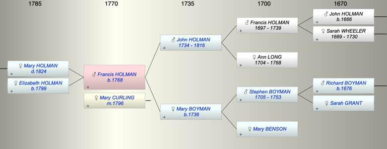

| [Index] |
| Francis HOLMAN (1768 - ) |
|  |
| b. 1768 at St Laurence |
| m. 15 Aug 1796 Mary CURLING at St Laurence |
| Parents: |
| John HOLMAN (1734 - 1816) |
| Mary BOYMAN (1736 - ) |
| Siblings (6): |
| Stephen HOLMAN (1759 - ) |
| Mary HOLMAN (1761 - ) |
| John HOLMAN (1764 - 1764) |
| John Cooper HOLMAN (1765 - ) |
| Ann HOLMAN (1769 - ) |
| Nicholas HOLMAN (1773 - ) |
| Children (2): |
| Mary Ann HOLMAN ( - 1824) |
| Elizabeth HOLMAN (1799 - ) |
| Grandchildren (3): |
| Elizabeth PETLEY (1821 - ), John PETLEY (1822 - ), James PETLEY (1824 - 1824) |
| Events in Francis HOLMAN (1768 - )'s life | |||||
| Date | Age | Event | Place | Notes | Src |
| 1768 | Francis HOLMAN was born | St Laurence | Note 1 | ||
| 15 Aug 1796 | 28 | Married Mary CURLING | St Laurence | Note 2 | |
| 05 Jan 1799 | 31 | Birth of daughter Elizabeth HOLMAN | Coulsdon, Surrey | bap Coulsdon 6 Jan 1799 ex FS | |
| 1816 | 48 | Death of father John HOLMAN (aged 82) | St Laurence | Note 3 | |
| 1824 | 56 | Death of daughter Mary Ann HOLMAN | Ramsgate | Note 4 | |
| Personal Notes: |
| The will of his uncle Francis Holman, marine artist, establishes that was this Francis was son of John Holman, mariner of Ramsgate. |
| Created on a Mac™ using iFamily for Mac™ on 8 Oct 2023 |